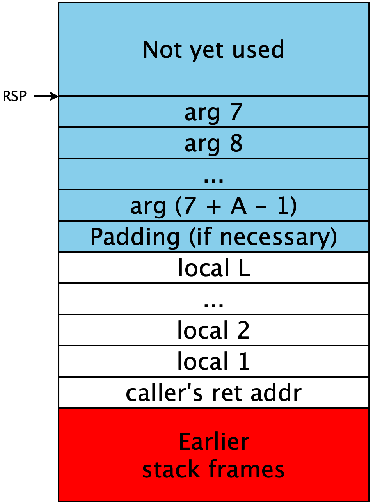

Lecture 4: Let-bindings and simple stack allocations
1 Growing the language: adding let
Every time we enhance our source language, we need to consider several things:
Its impact on the concrete syntax of the language
Examples using the new enhancements, so we build intuition of them
Its impact on the abstract syntax and semantics of the language
Any new or changed transformations needed to process the new forms
Executable tests to confirm the enhancement works as intended
1.1 The new syntax, both concrete and abstract
Let’s grow the language above further, by adding the concepts of identifiers and let-bindings:
‹prog› def main ( IDENTIFIER ) : ‹expr› ‹expr› NUMBER add1 ( ‹expr› ) sub1 ( ‹expr› ) IDENTIFIER let IDENTIFIER = ‹expr› in ‹expr›
We’ve changed a few things syntactically:
We allow the argument to the
mainfunction to be any identifier, rather than hard-coding the choice ofxSimilarly, we allow variables used to be any identifier.
We add a
letexpression,let x = e1 in e2
This change means we now need abstract syntax for programs and expressions, which we update as follows:
type Var = String;
#[derive(Clone, Debug)]
pub struct Program {
pub parameter: Var,
pub body: Expression,
}
#[derive(Clone, Debug)]
pub enum Expression {
Variable(Var),
Number(i64),
Add1(Box<Expression>),
Sub1(Box<Expression>),
Let(Var, Box<Expression>, Box<Expression>),
}This time we add an abstract syntax form for Programs since we
now allow for an arbitrary variable name used in the parameter.
1.2 Examples and Well-formedness Conditions
Let’s start by taking a look at a few example programs that match this grammar. If we write the let form sequentially, this looks much like C-style imperative programming.
def main(x):
let y = sub1(x) in
let z = add1(add1(y)) in
add1(z)But notice that let is allowed in expression position
so we get some perhaps unexpected combinations:
def main(x):
let z =
let y = sub1(x) in
add1(add1(y)) in
add1(z)or even
def main(x):
let z = add1(add1(let y = sub1(x) in y)) in
add1(z)In C-like languages variable binding is included in statements which are a separate syntactic class from expressions. Statements do something which has a side-effect, and can contain expressions, which evaluate to some result. In the Snake language, instead we follow the style of functional programming languages, where we dispense with this distinction and make all constructs into expression constructors. This makes the language a bit more uniform, and as we’ll see when we get further into compilation, functional and imperative languages are ultimately not all that different when viewed from the perspective of the compiler.
Rust in particular takes a sort of middle ground in the statement vs
expression divide, owing to its functional roots. In Rust, a
let is a statement, but statements themselves can produce a
value, more similar to expression forms. So the Rust equivalent of our
unusual example above would be
fn add1(x: i64) -> i64 {
x + 1
}
fn sub1(x: i64) -> i64 {
x - 1
}
fn funny(x: i64) -> i64 {
let z = {
add1(add1({
let y = sub1(x);
y
}))
};
add1(z)
}Another thing we should notice about our syntax is that unlike our previous languages, there are some well-formed terms in our concrete syntax that don’t look like well-formed programs. For example the program
def main(x):
yDo Now!
Should this program be accepted by our language? Why or why not?
1.3 Semantic Analysis and Scope
Most programming languages will reject such a program at compile-time,
the reason being that the variable y has not yet been
declared. This is an example where the abstract syntax tree doesn’t
fully capture all of the invariants that the programs in our language
need to satisfy. This is typical in programming languages: even after
parsing into a syntax tree, there are more sophisticated properties
like variable usage, type checking, borrow checking etc. that are
performed. This phase of the compiler after parsing is sometimes
called semantic analysis, as opposed to the simple
syntactic analysis performed by the parser. The combination of
lexing, parsing and semantic analysis are collectively called the
frontend of the compiler. We can identify when we’ve reached
the end of the frontend of the compiler when we are able to define a
semantics.
Let’s set some terminology. We reject the program above because the
usage of y happens in a context in which y is not
in scope. We call such a y a free variable. On
the other hand, in the similar program
def main(x):
xThere are two occurrences of x. The first one is as a
parameter to the main function. We call this the binding-site
for x, and the second the usage of x. In this usage,
x is a bound variable, or that it is in the scope
of its binding site.
Do Now!
Identify the binding sites, free variables and bound variables in the following term:
def main(x): let y = let z = x in add1(y) in let w = sub1(x) in sub1(z)
In this program, there are 4 binding sites: def main(x),
let y = , let z = and let w =. There are 4
occurrences of variables, x in let z = x in add1(y),
y in add1(y), x again in sub1(x) and
z in sub1(z). Of these, the occurrences of x
are bound, referencing the parameter of the main function, but the
occurrences of y and z are free. The occurrence of
y is unbound because the scope of y in
let y = e1 in e2 is only e2, not
e1. Similarly, while there is a declaration of z, the
use of z is not in a sub-tree of that let z at all,
and so similarly it is a free variable.
We can formalize this property in code, by writing a function
check_scope(&Program) -> Result<(), ScopeError>In the design of such a function, we again apply our strategy of programming with expressions by recursive descent. To do so, we realize that we need some auxiliary data to keep track of which variables are currently in scope. In this case, we can use a set of variables that are currently in scope. We call an auxiliary data structure like this that keeps track of which variables are in scope an environment.
1.4 Semantics
Do Now!
Extend the interpreter from last time to handle the new constructs in this language. You will need a function with signature
interpret(&Program, i64) -> i64...and you will certainly need a helper function. What should that function do, and what should its signature be?
Writing this interpreter is straightforward, at least initially: numbers evaluate to themselves, and adding or subtracting one from an expression should simply evaluate the expression and then add or subtract one from the result. But what should we do about identifiers and let-bindings?
We first need to make a choice in our semantics, how does an
expression let x = e1 in e2 evaluate. The two simplest choices are:
We evaluate
e1down to a numbern, and then proceed to evaluatee2, remembering thatxnow corresponds tonWe immediately proceed to evaluate
e2, but remembering thatxnow corresponds to the expressione1
The first strategy is called eager evaluation and is the most common in programming languages. The latter strategy is called lazy evaluation, and is used in some functional languages, most famously Haskell. To implement eager or lazy evaluation in our interpreter, we will have to keep track of a new kind of environment. This time the environment will not be simply a set of variables that are in scope, but a mapping from variable names to their associated meaning. The meaning of the variables is what differs in the two different evaluation strategies:
In lazy evaluation, we need an environment that maps variables to expressions, and only run the expression when the variable is used.
In eager evaluation, we need an environemnt that maps variables to values, in our case integers, so using a variable is just a lookup in the environment.
Do Now!
Suppose we added an infix
Plus(Box<Exp>, Box<Exp>)operation. Construct a program whose running time is drastically worse with the first environment type, compared to the second environment type.Suppose we added an expression
Print(Box<Exp>)that both prints its argument to the console, and evaluates to the same value as its argument. Construct a program whose behavior is actually different with the two environment types.
1.5 Shadowing
There is one final subtlety to variable names to address. Consider the following expression
let x = 1 in
let x = 2 in
x2. This phenomenon, where an inner variable binding overrides
an outer one is called shadowing, we say that the second
binding site shadows the first one. An unusual consequence of
allowing shadowing is that if a variable is shadowed it cannot be
directly accessed inside the shadowing binding, as the name is now
being used for something else.Allowing shadowing is convenient and intuitive to programmers, but
raises some implementation pitfalls we should be aware of.
Consider the task of optimizing the input program. Say we are working with an
expression let x = e1 in e2 where e1 is a fairly
simple term like a number or a variable or just one add1, then
we could simplify the term by simply replacing all occurrences of
x in e2 with e1.
For instance the expression
let x = y in
let z = add1(x) in
add1(add1(z))let z = add1(y) in
add1(add1(z))This simplification is called beta reduction, and when
done in reverse is called common subexpression elimination. Both
beta reduction and common subexpression elimination can speed up
programs depending on the complexity of recomputing e1 and how
x is used in the program.
This looks like a fairly benign operation, but if we’re not careful, we can unintentionally change the behavior of the program!
Do Now!
Can you give an example program in which the textual substitution of
e1forxine2differs in behavior fromlet x = e1 in e2? Hint: it will involve shadowing
def main(y):
let x = y in
let y = 17 in
add1(x)This program implements a function that adds 1 to the input.
If we naively replace all occurrences of x with y, we end up with
def main(y):
let y = 17 in
add1(y)which always returns 18! The reason is that the meaning of a
variable y is dependent on the environment, and in this
case there are two different binding sites that bind the variable
y. In fact, because of shadowing it is impossible to refer to
the outer definition of y in the body of let y = 17.
How can we solve this issue? We notice that this is really only a
problem with the fact that the names happen to be the same, but the
actual String name of the variable is not really relevant to
execution, the only purpose of the name is to identify which
binding site the variable refers to. If we were to consistently
change the names at the binding sites along with their
corresponding uses, we would produce an equivalent program. A simple
way to do this is to append a unique number to all identifiers, so
that we can still recall the original names for better error messages
and more readable intermediate code when debugging, but to ensure that
all binding sites have unique names so that we cannot accidentally
conflate them. After such a name resolution pass the program would look like
def main(y#0):
let x#0 = y#0 in
let y#1 = 17 in
add1(x#0)And applying the naive substitution now preserves the intended meaning of the variable names:
def main(y#0):
let y#1 = 17 in
add1(y#0)For this reason, it is common in compilers to perform a renaming pass that ensures that all binding sites have globally unique names, and to maintain this invariant for the remainder of the compilation process.
Exercise
Implement a function resolve_names(p: &Program) -> Program that renames all variables to unique identifiers. As before, you will need to carry some kind of environment. What data structure is appropriate for the environment in this case?
2 Compiling Variables and Let-expressions
When we turn to the task of compiling our expressions, we see that the
presence of a context of variables complicates matters. Previously, we
stored all intermediate results in rax, and our two base cases
of a number and usage of the single input variable would mov a
constant, or the value of rdi into rax, respectively. We
were able to use rdi before because we knew there was only a
single variable, but now there are arbitrarily many different
variables, and so we need to store each of their corresponding values
in distinct memory locations. That is, just as how in the scope
checker we needed an environment to know which variables were in
scope, and in the interpreter we needed an environment to know what
values the in-scope variables had, for the compiler we also need an
environment, which tells us where the variables’ values are
stored.
2.1 x86: Addressable Memory, the Stack
So far our only access to memory in x86-64 has been the registers. But there are only 16 of these, giving us only 128 bytes of memory to work with. Since each variable in our source language holds an 64-bit integer, and we can have arbitrarily many variables, we need access to more memory than just the registers. In the x86-64 abstract machine, in addition to the registers, we also have access to byte-addressable memory, where addresses are themselves 64-bit integers. So this would seem to imply that we have access to 2^64 bytes of memory, though in reality current hardware only considers the lower 48 bits significant. Still this gives us access to 256 terabytes of addressable memory, which should be plenty for our applications.
Programs don’t start at memory address 0, or at address 264, but they do have access to some contiguous region:

The Code segment includes the code for our program. The Global
segment includes any global data that should be available throughout our
program’s execution. The Heap includes memory that is dynamically
allocated as our program runs —
Because the heap and the stack segments are adjacent to each other, care must be taken to ensure they don’t actually overlap each other, or else the same region of memory would not have a unique interpretation, and our program would crash. This implies that as we start using addresses within each region, one convenient way to ensure such a separation is to choose addresses from opposite ends. Historically, the convention has been that the heap grows upwards from lower addresses, while the stack grows downward from higher addresses.1This makes allocating and using arrays particularly easy, as the ith element will simply be i words away from the starting address of the array.
The stack itself must conform to a particular structure, so that
functions can call each other reliably. This is (part of) what’s
known as the calling convention, and we’ll add more details to
this later. For now, the high-level picture is that the stack is
divided into stack frames, one per function-in-progress, that
each stack frame can be used freely by its function, and that when the
function returns, its stack frame is freed for use by future calls.
(Hence the appropriateness of the name “stack”: stack frames obey a
last-in-first-out discipline as functions call one another and
return.) When a function is called, it needs to be told where its
stack frame begins. Per the calling convention, this address is
stored in the rsp register (read sp as standing for
“stack pointer”)2This is a simplification. We’ll see the
fuller rules soon.. Addresses lower than rsp are free
for use; addresses greater than rsp are already used and
should not be tampered with:

To access memory in x86, we need to "dereference" an address,
syntactically, this is written by surrounding the address in square
brackets. For instance to move a value from rdi to rax, we
write mov rax, rdi, but to load a value from the memory pointed
to by rdi we write mov rax, [rdi]. Vice-versa, to store
the value in the register rdi in the memory pointed to by
rax, we write mov [rax], rdi. Most instructions in x86
that work with registers work just as well with addresses, with the
exception that there can only be one memory access in the
instruction. So for instance, we cannot write mov [rax], [rdi],
we would instead need to first load [rdi] into a register and
then store it to [rax].
3 Mapping Variables to Memory
The description above lets us refine our compilation challenge: we
have a large region of of memory available to us on the stack, and we
can store our variables at locations rsp - 8 * 1, rsp - 8 *
2, ... rsp - 8 * i.
Exercise
Why do we use multiples of 8?
Exercise
Given the description of the stack above, come up with a strategy for allocating numbers to each identifier in the program, such that identifiers that are potentially needed simultaneously are mapped to different numbers.
One possibility is simply to give every unique binding its own unique integer. Trivially, if we reserve enough stack space for all bindings, and every binding gets its own stack slot, then no two bindings will conflict with each other and our program will work properly.
In the following examples, the code is on the left, and the mappings of names to stack slots is on the right.
let x = 10 /* [] */
in add1(x) /* [ x --> 1 ] */
let x = 10 /* [] */
in let y = add1(x) /* [x --> 1] */
in let z = add1(y) /* [y --> 2, x --> 1] */
in add1(z) /* [z --> 3, y --> 2, x --> 1] */
let a = 10 /* [] */
in let c = let b = add1(a) /* [a --> 1] */
in let d = add1(b) /* [b --> 2, a --> 1] */
in add1(b) /* [d --> 3, b --> 2, a --> 1] */
in add1(c) /* [c --> 4, d --> 3, b --> 2, a --> 1] */We can implement this strategy fairly easily: we can keep one mutable
counter and as we traverse the program, associate each variable with
an offset, incrementing the counter to ensure all variables are placed
in different locations. However, if we inspect the output of this
program carefully, we notice that it doesn’t use the minimal
number of stack slots. In the last expression, where we have a
left-nested let, the variables b and d have fallen out
of scope when we define c. So in fact we don’t actually
need to ensure that c uses a different
address. Instead, we can re-use the space we used for b to
store the value of c.
A closer reading of the code reveals that our usage of let bindings also forms a stack discipline: as we enter the bodies of let-expressions, only the bindings of those particular let-expressions are in scope; everything else is unavailable. And since we can trace a straight-line path from any given let-body out through its parents to the outermost expression of a given program, we only need to maintain uniqueness among the variables on those paths. Here are the same examples as above, with this new strategy:
let x = 10 /* [] */
in add1(x) /* [ x --> 1 ] */
let x = 10 /* [] */
in let y = add1(x) /* [x --> 1] */
in let z = add1(y) /* [y --> 2, x --> 1] */
in add1(z) /* [z --> 3, y --> 2, x --> 1] */
let a = 10 /* [] */
in let c = let b = add1(a) /* [a --> 1] */
in let d = add1(b) /* [b --> 2, a --> 1] */
in add1(b) /* [d --> 3, b --> 2, a --> 1] */
in add1(c) /* [c --> 2, a --> 1] */Only the last line differs, but it is typical of what this algorithm can
achieve. Let’s work through the examples above to see their intended compiled
assembly forms.3Note that we do not care at all, right now, about
inefficient assembly. There are clearly a lot of wasted instructions that move
a value out of rax only to move it right back again. We’ll consider
cleaning these up in a later, more general-purpose compiler pass. Each
binding is colored in a unique color, and the corresponding assembly is
highlighted to match.
|
| |
|
| |
|
| |
This algorithm is also not really any harder to implement than the
previous one: adding a binding to the environment simply allocates it
at a slot equal to the new size of the environment. As we descend
into a let-binding, we keep the current environment. As we descend
into a let-body, we augment the environment with the new binding.
And as we exit a let-expression, we discard the augmented
environment —
Exercise
Complete this compiler, and test that it works on all these and any other examples you can throw at it.
1This makes allocating and using arrays particularly easy, as the ith element will simply be i words away from the starting address of the array.
2This is a simplification. We’ll see the fuller rules soon.
3Note that we do not care at all, right now, about
inefficient assembly. There are clearly a lot of wasted instructions that move
a value out of rax only to move it right back again. We’ll consider
cleaning these up in a later, more general-purpose compiler pass.